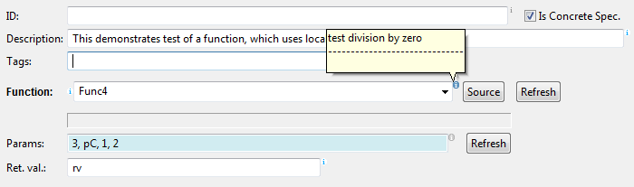
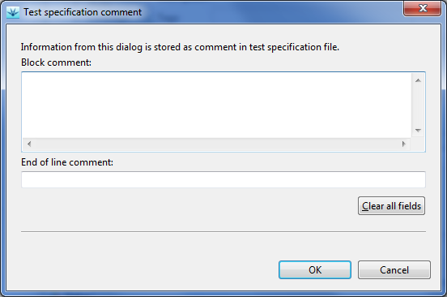
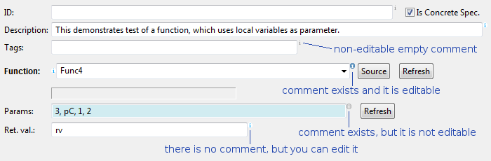
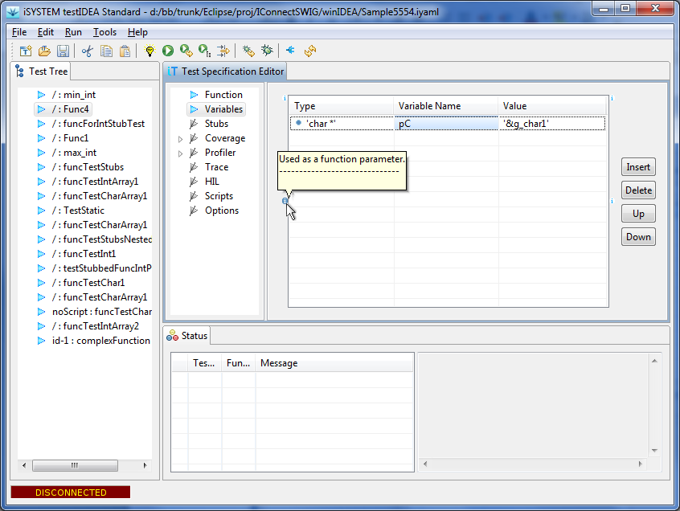

Example:
locals: # comment for section 'locals'
x: int # comment for type 'int'
y: MyType # comment for type 'MyType'
Example:
# comment for section 'locals'
locals:
# comment for var x
x: int
# comment for var y
y: MyType
Example:
# comment for section 'locals'
locals: # comment for section 'locals'
# comment for var x
x: int # comment for type 'int'
# comment for var y
y: MyType # comment for type 'MyType'
Examples:
Comments will be preserved in this case
tags:
- tagA, # eol comment A
- tagB, # eol comment B
- tagC # eol comment C
Flow style on the other hand, ignores comments and formatting:
tags: [tagA, # ignored comment A
tagB, # ignored comment B
tagC # ignored comment C
] # ignored comment C
When saved, the following is written to file:
tags: [tagA, tagB, tagC]
Comments in the last line of test specification have no scalar
to be attached to, so they are ignored and therefore not written to
output when the test specification is saved.
When we move mouse cursor to decoration icon, the comment is displayed in tooltip as shown in the image.

If there is no comment, nothing happens.The comment edit dialog opens, when we click active decoration icon:

To visually present status of comment for each test specification item, decoration icons can have one of four states, as shown in the image below:
Description of comment states:If an item with comment is deleted from test specification, then the comment is also deleted. It is not possible to preserve comments without data. For example, if we specify test ID and its comment, and then decide to delete the id, the comment is also deleted.
Most edit fields contain data for simple YAML tags. These fields have only one decoration icon on the right. Fields, which refer to structured items, for example the 'Function' field, have additional decoration icon on the left. If we are editing test specifications in testIDEA only, then it does not matter, which decoration we use. If location of the comment in YAML test specification is important, we can enter the comment, then copy the test case to the clipboard and paste it a text editor. There we can see the exact location of the comment.

Decoration icons on the left side refer to the locals: section in a test case. The top icon contains comment for the locals tag itself. The bottom icon contains comment for the selected variable declaration.Decoration icons on the right side refer to the init: section in a test case. The top icon contains comment for the init tag itself. The bottom icon contains comment for the selected variable initialization.
Example:
The following was written in text editor:
tags: # part of regression tests
- moduleA # communication functions
- moduleB # math functions
func:
- f # test for midnight
- - 24 # hours
- 00 # minutes
This was later modified in testIDEA. The following was saved:
tags: # part of regression tests
- moduleA
- moduleB
func:
- f # test for midnight
- - 24
- 00
Note, that other comments than ones for tag items and parameters
were preserved.
All other items in test specification preserve comments.